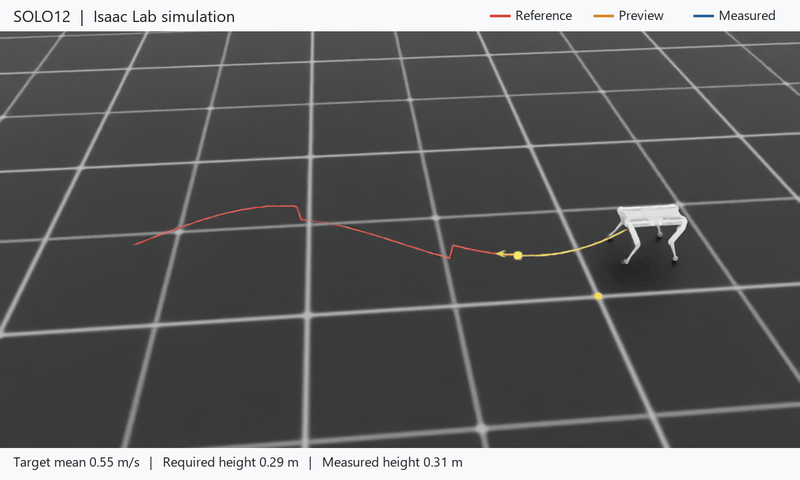
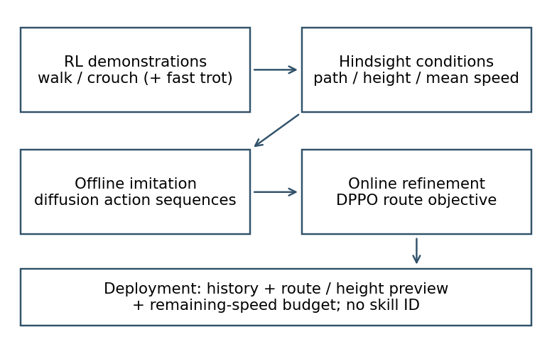
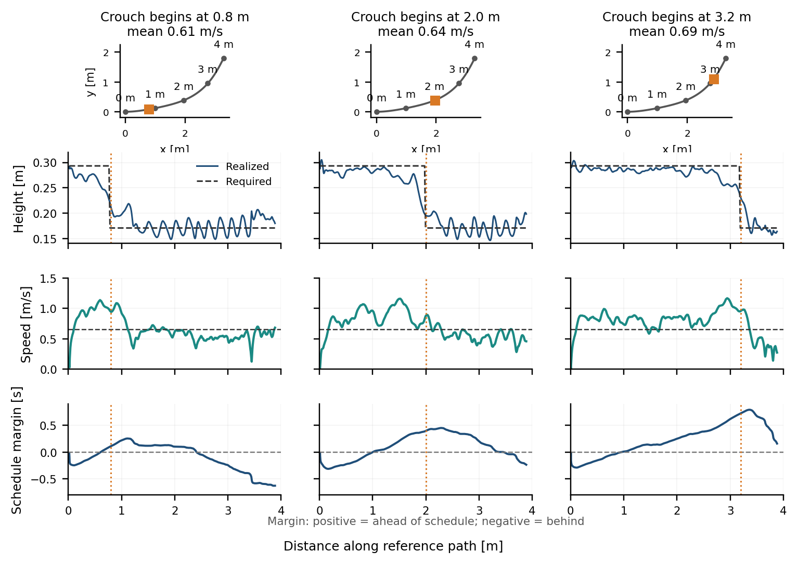
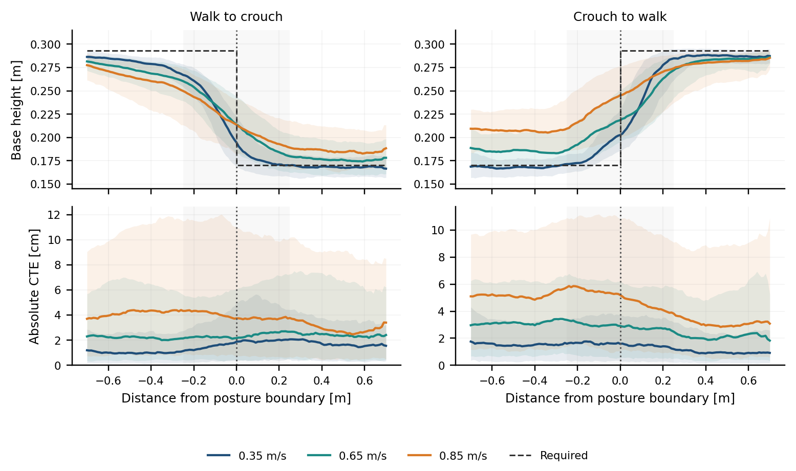
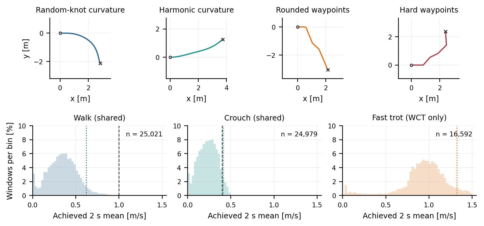

Follow the route
Track the requested spatial path, including bends and corners.
SOLO12 · SIMULATION STUDY
Diffusion policies for route, posture and timing control.
We reuse motion from walking and crouching controllers to learn a policy that follows a route, changes body height where requested, and works towards a target completion time. The task does not prescribe a local speed profile or a gait identifier.
How the policy is trained
01 / THE TASK
The controller receives a route, the required body height along it, and a target average speed. It must satisfy them together.
Track the requested spatial path, including bends and corners.
Stand or crouch according to the height profile along the route.
The average-speed request sets a completion-time target; local speed can vary.
Average speed is not a local speed command. The robot can slow down through a difficult turn or crouched section, then adjust its pace elsewhere.
02 / THE APPROACH
Walking and crouching experts generate motion under velocity commands. We turn their achieved behaviour into supervision for a different task interface.

Run walking and crouching controllers with varied velocity commands.
Use recorded paths, desired heights and achieved mean speeds as task conditions.
Train a diffusion policy on the relabelled trajectories.
Use DPPO task rewards to improve route, posture and timing completion.
At execution History and task inputs condition an action chunk. The controller executes four joint actions, then updates and replans. The hierarchical baseline instead selects a frozen expert and velocity command at 5 Hz; its expert acts at 50 Hz.
03 / PAIRED DEVELOPMENT EVALUATION
The examples below come from the same route and task request for each method. They are recorded evaluation traces, not reconstructed robot videos.
A shared cursor shows simulated time. XY traces are recorded simulator base positions; the 3D joint motion is not available in these logs.
RECORDED BASE TRAJECTORY
RECORDED TASK SIGNALS
Counts retain the full denominators. Arrival-speed error is defined only for episodes that reach the goal; see each actor’s arrival count. These development routes are not independent training seeds.
Download episode-level JSON ↗Read this comparison carefully. The hierarchy is a strong baseline on ordinary routes. Repeated posture results vary with the starting posture; no method leads on every measure. One diffusion seed is available in this paired bank. The controller interfaces and checkpoint selection procedures also differ, so this is not a causal test of diffusion alone.
04 / TIMING IS SPATIAL
On the same route, shifting where crouching begins changes where the controller gains or loses time. The target average does not require constant speed, and the achieved mean need not match it exactly.
The remaining-speed input is an engineered feedback signal based on the remaining route and time budget. The policy learns how to respond to it; it is not an optimal speed planner.

05 / WHAT REMAINS OPEN
Strong moderate-speed performance does not extend to every speed and posture combination. Fast crouch and repeated changes remain difficult.
Task completion does not guarantee that every demonstrated contact pattern is preserved after refinement.
The hierarchy uses original frozen experts. The paired study has one diffusion seed and methods with different interfaces.
These results are from Isaac Lab. Physical-robot timing, integration and safety have not been demonstrated here.

